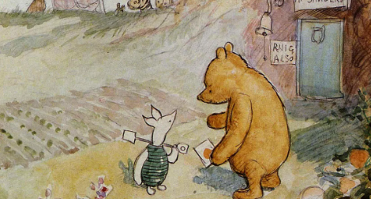

Once Upon a Page
Once Upon a Page

Pooh and the Honey Tree

Edward Bear bumps down the stairs, certain there must be another way down, if only he could think of it. He is introduced as Winnie-the-Pooh. Although Winnie is often thought of as a girl's name, Christopher Robin explains that the makes it the perfect name for a boy bear. Sometimes Winnie-the-Pooh likes a game, but on the bear's behalf, Christopher Robin asks for a story. Best would be a story about Pooh, and the stories begin.
While walking, Winnie-the-Pooh hears the sound of buzzing coming from an oak tree. He concludes there must be bees nearby, and therefore honey, for "the only reason for being a bee ... is making honey." He tries climbing the tree, but it is too tall, and he tumbles into the gorse bush below. Determined to get the honey, Pooh devises a plan. He finds Christopher Robin and kindly requests a balloon. His plan is to float gracefully toward the tree, tricking the bees into believing he is small black rain cloud. Once tricked, the bees will allow him near their honey, which he will take for himself. The plan is less than successful; Pooh floats up toward the tree but cannot reach the honey; the bees buzz angrily, and he believes them suspicious. Meanwhile, at his request, Christopher Robin marches under the Pooh cloud with an umbrella, looking as if preparing for rain. Pooh sings a rain cloud song, cementing his disguise. "How sweet to be a Cloud/Floating in the Blue!" Alas, the bees are suspicious, and Pooh decides they are the wrong kind of bees after all. Discovering the bees might in fact be hostile, Pooh realizes he has no plan to get down. Christopher Robin shoots the balloon down, and Pooh comes back down to earth, again getting stuck by the gorse.